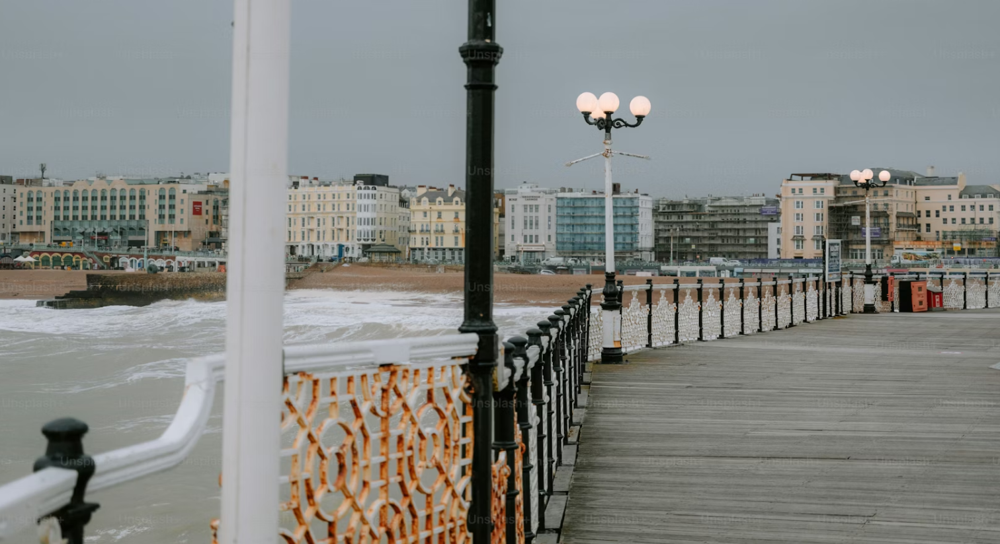
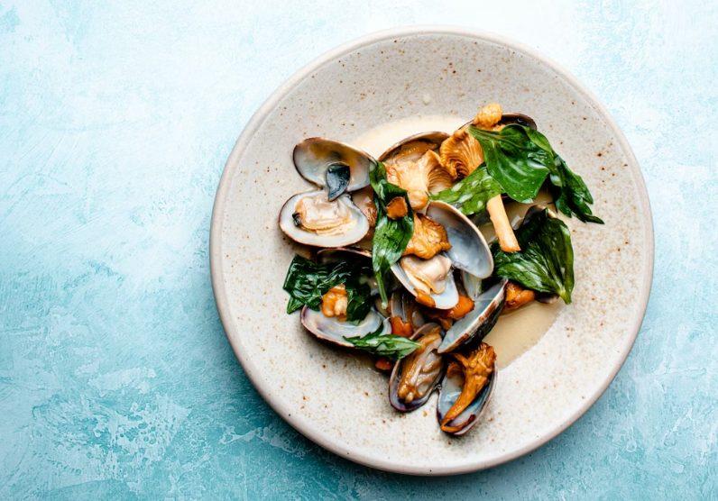
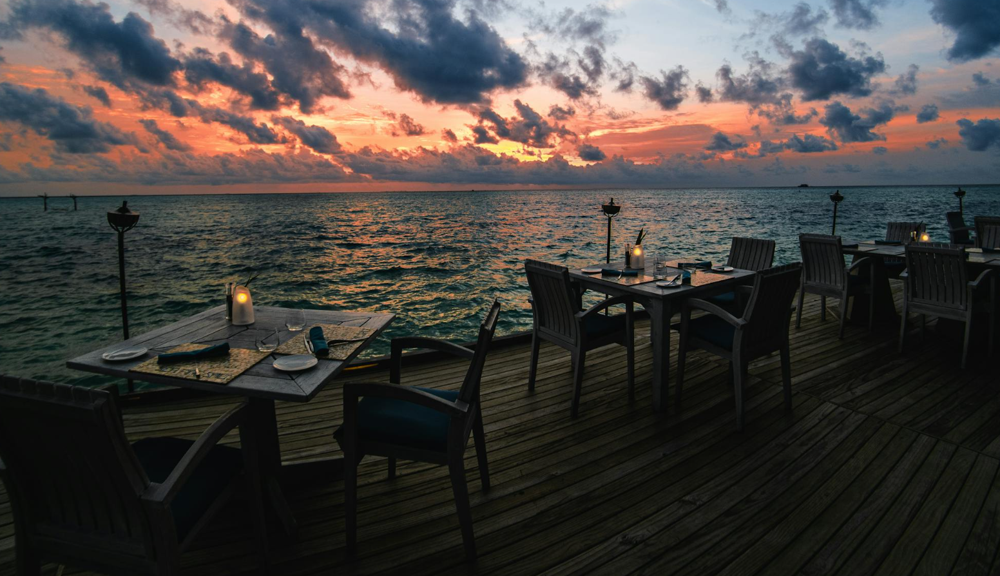

The Cavalier Hotel
The Cavalier Hotel, built in the 1920s, is a historic landmark that reflects Virginia Beach. The hotel is a great place to learn more about Virginia Beach's history.
The Cavalier Hotel, built in the 1920s, is a historic landmark that reflects Virginia Beach. The hotel is a great place to learn more about Virginia Beach's history.

Hotels along the Virginia Beach Boardwalk represent the city as a coastal destination. Located near the oceanfront, they provide a cultural experience of Virginia Beach.

Try Virginia Beach’s fresh seafood—especially crab, shrimp, and oyster. It’s a direct taste of the city’s coastal roots and connection to the Atlantic Ocean.

Don’t miss the chance to experience coastal dining in Virginia Beach, where oceanfront meals and local flavors bring the community’s beach culture and history to life.